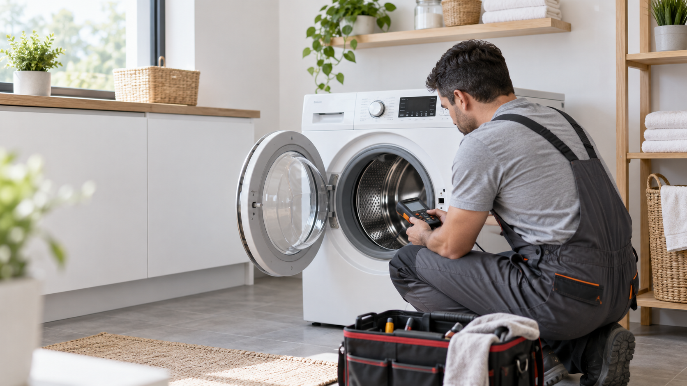

Start with the diagnosis, not a guess
A machine that will not start might need a small switch, a control board, or something unrelated to the appliance, such as the power supply. The same outward symptom can lead to very different repair costs. Ask for a diagnosis and an estimate before deciding to replace a refrigerator, washer, dryer, dishwasher, or oven.
A useful estimate separates labor and parts, explains what failed, and states what is covered if the same problem returns. Compare that with the installed price of a replacement, including delivery, removal, and any cabinet or connection changes.
Consider age, condition, and parts
Age matters, but it should not be the only deciding factor. Look at the appliance's overall condition, how often it has needed service, whether parts are available, and whether the repair addresses the root cause. A well-maintained appliance with a single failed component may be a good repair candidate; a machine with several recurring faults deserves a closer cost comparison.
Built-in and specialty appliances can have a higher replacement cost and may require installation work. In those cases, a repair that initially sounds expensive may still be reasonable when compared with the full cost of replacing the unit.
Make the choice with real numbers
Get the total repair estimate and the realistic all-in replacement price. Consider the warranty on both options and the time needed to complete the work. If the repair is uncertain, ask the technician what additional faults could be found and whether those would change the recommendation.
Nova provides a diagnosis and an up-front estimate before work begins. If repair is impractical, we will explain why so you can make the decision with the facts in front of you.